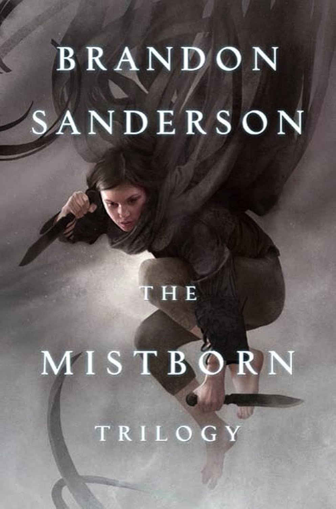

Brandon has reinvented the concept of world-building and created an entire universe of shared worlds and stories while allowing each world to flourish on it's own with it's own characters and tone along with each having it's own magic system. The character's defy contemporary tropes of a hero. They are flawed and human. They deal with mental health issues and make you wonder how this person could even save themselves, much less the world. In the end they always find a way and teach us that one does not have to be perfect and any one of us is capable of greatness, in spite of whatever darkness we hide from the world.
